Фотографии
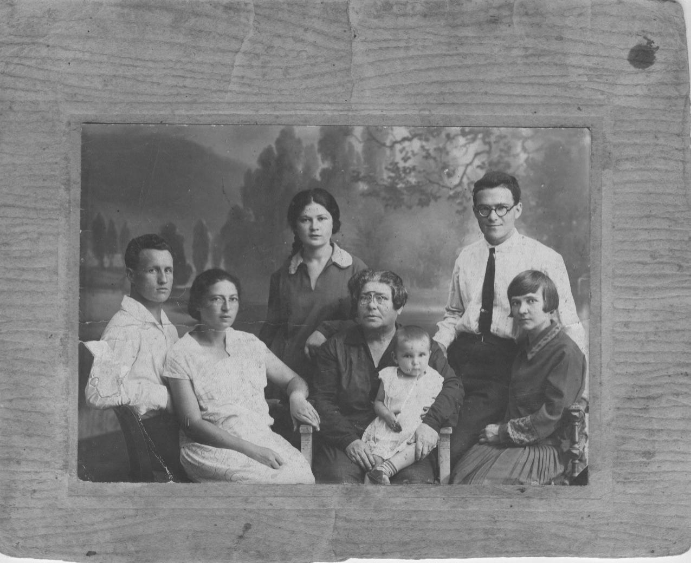
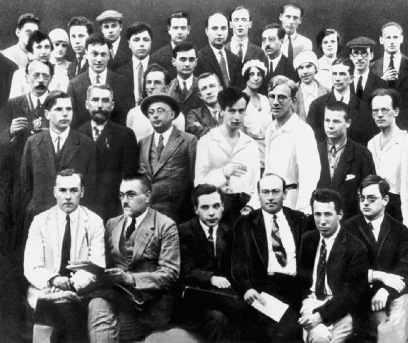
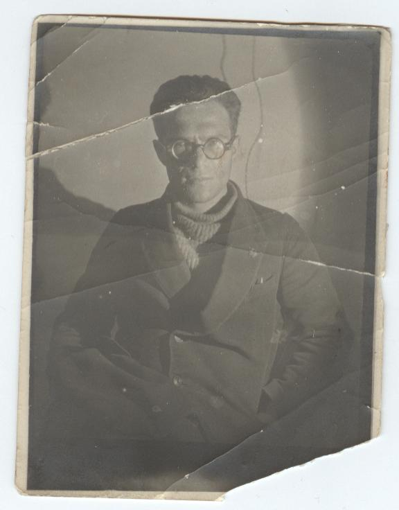
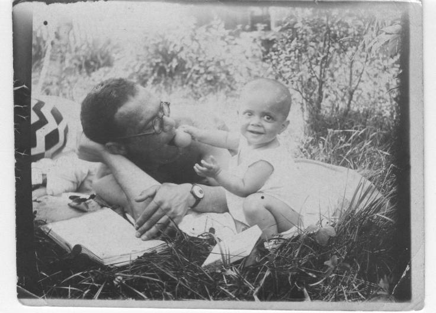

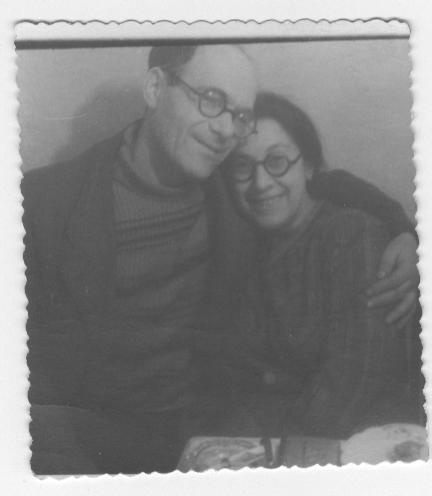
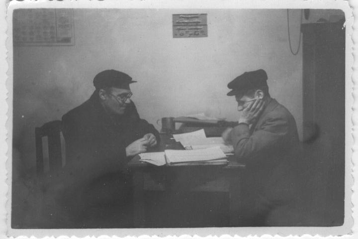
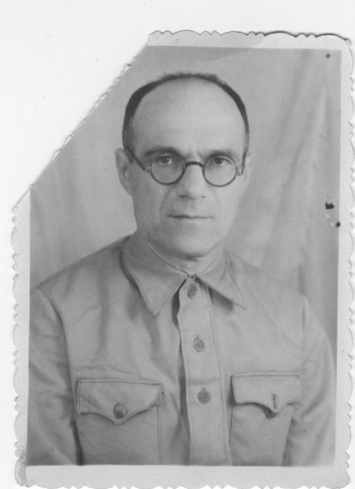
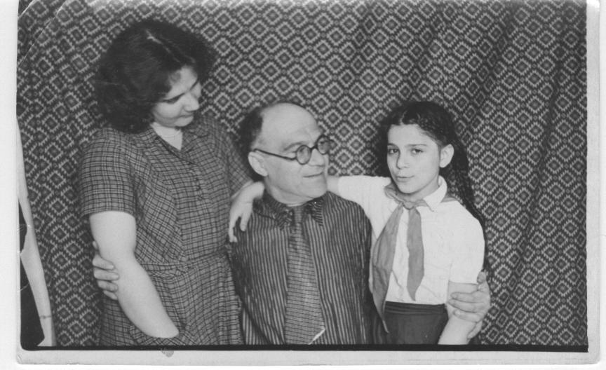
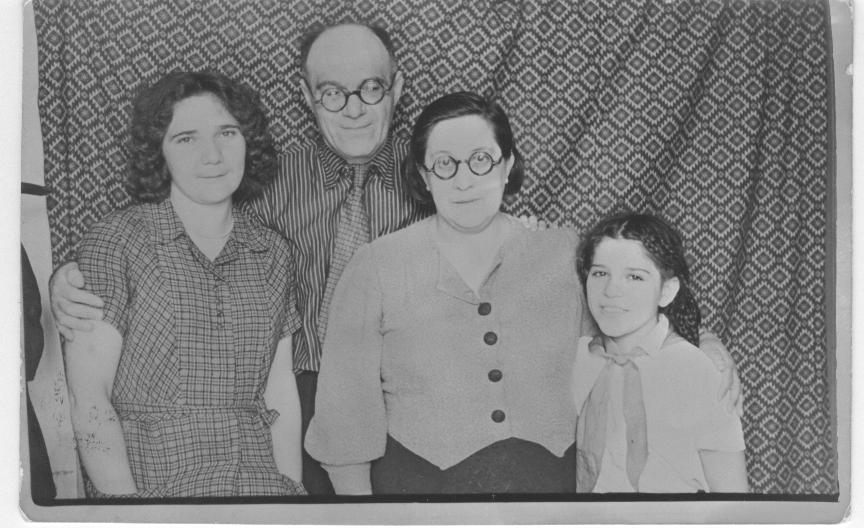
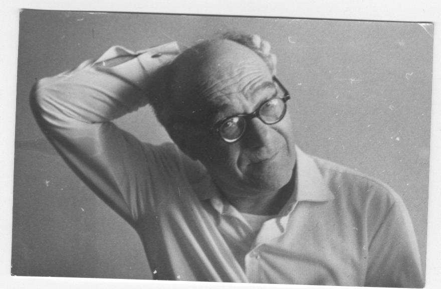
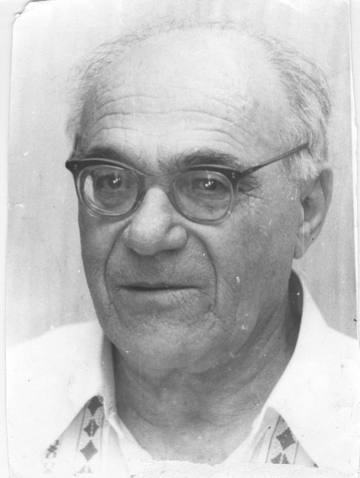
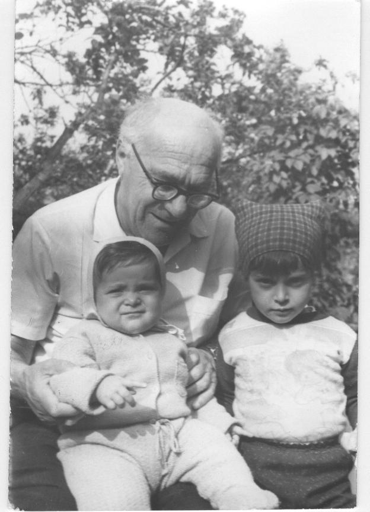
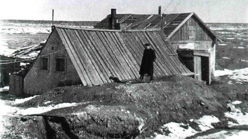
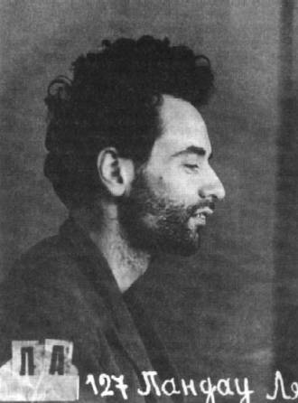
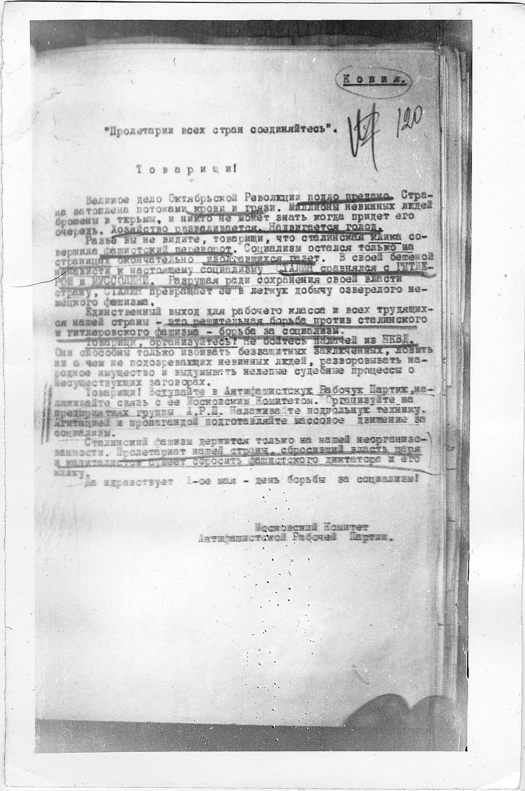
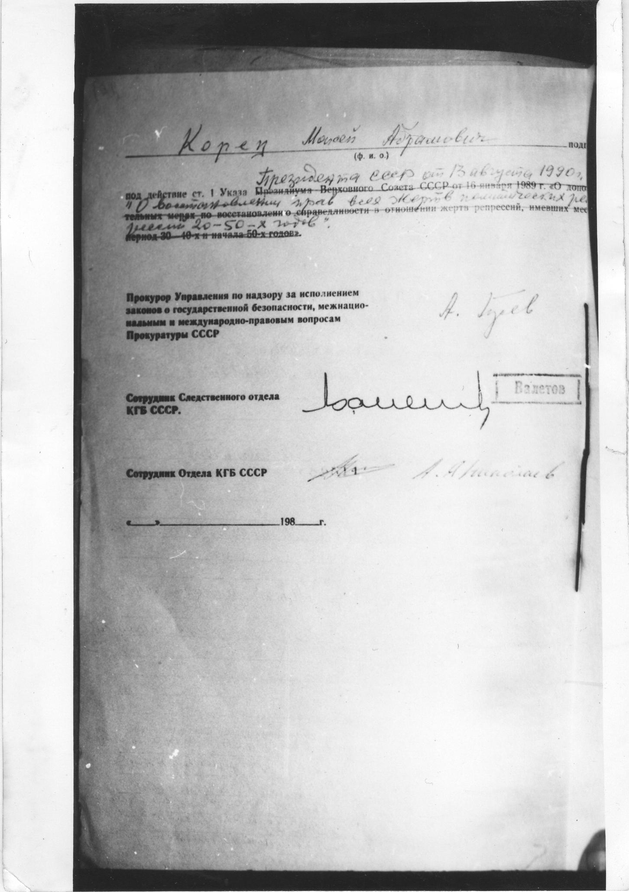
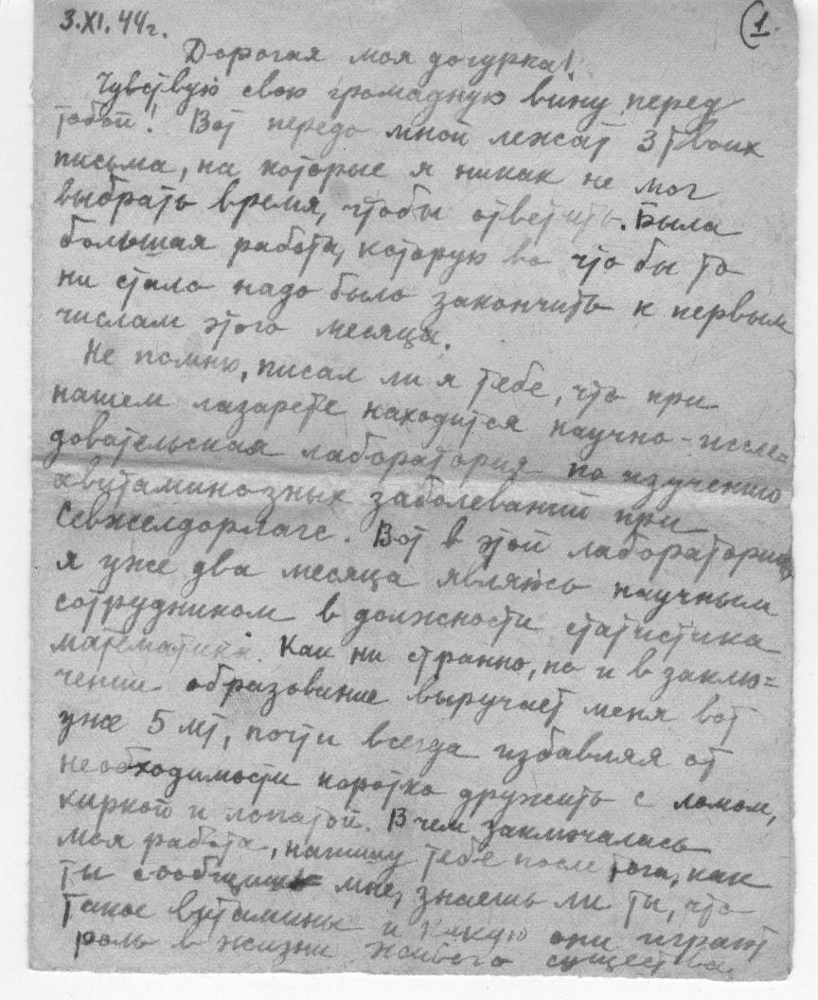
На опубликованной странице снимков не было: в ней остался один заголовок. Эти файлы нашлись в Диске владельца сайта. Портрет на главной — тот, что семья отдала в общественное достояние.